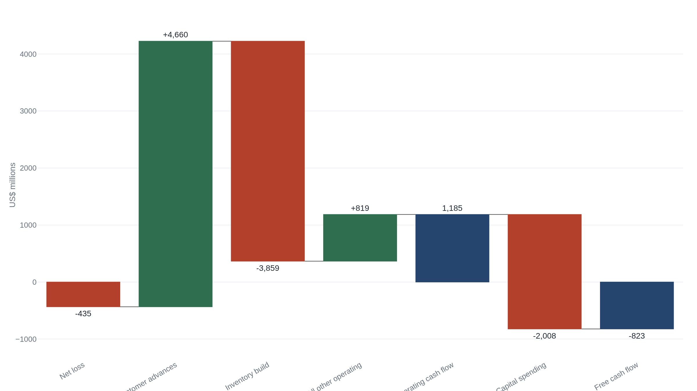

Boeing's cash rebound came from customer deposits, not delivered jets
Boeing collected $4.7 billion of new customer deposits in the first half of 2026, more than all the operating cash it reported, while free cash flow stayed $823 million in the red.
The quarter that reads as a recovery
On July 28, 2026, Boeing reported second-quarter revenue of $24.6 billion, up 8 percent from a year earlier, on 171 commercial airplanes delivered against 150 the summer before.1 Its order book stood at a record $715 billion, including a record $597 billion at the commercial-airplane business and more than 6,200 jets waiting to be built.1 The company still lost money on paper, a net loss of $444 million, and yet it generated $631 million of free cash flow in the quarter, against a $200 million outflow a year earlier.1
The market read the print as a turn. Free cash flow, one trade outlet wrote, is "a closely watched measure of Boeing's recovery," and it had "turned positive."2 For a company that has burned cash for most of a decade and spent the last two years rebuilding after a door plug blew out of a 737 in flight, a single positive-cash quarter is a milestone worth marking. The question is what produced the cash. On the six-month record that Boeing filed the same day, the answer is not the jets it delivered. It is the deposits its customers paid for jets it has not yet built.3
How a jet becomes cash
Boeing is three businesses. Commercial Airplanes designs and builds the 737, 787, and 777 families and sold $11.8 billion of them in the quarter, at an operating loss of 2.7 percent. Defense, Space & Security builds military aircraft and systems and turned a small loss, dragged down by a $280 million charge on the VC-25B, the program to build the next two presidential aircraft. Global Services sells parts, maintenance, and support to operators of the installed fleet, and it is the profit engine: $5.3 billion of revenue at an 18.1 percent operating margin.1 The recovery question is about the first of the three, because clearing the commercial backlog is where the cash is locked up.
A commercial jet is sold years before it flies. An airline places an order, pays a deposit, and pays further progress billings as the airframe moves down the line, with the largest payment falling due on delivery. On Boeing's balance sheet those prepayments are not revenue. They sit as a liability called advances and progress billings: money held against aircraft the company still owes. That balance was $64.1 billion at the end of June, up from $59.4 billion at the start of the year.3 The liability is drawn down as jets deliver. Cash arrives early; the obligation is settled later, in airplanes.
This is why free cash flow, not net income, is the number that governs a manufacturer working off a backlog. Reported earnings are smoothed: program accounting spreads the cost of a jet across an accounting block of many units, so a bad quarter and a good one can look alike on the bottom line. Cash is not smoothed. To lift delivery rates the company must first pay to build inventory, the half-finished jets waiting on parts or certification, and pour capital into its factories. It recovers that outlay only when the finished aircraft is handed over and paid in full. Boeing's own quarter shows the two measures pulling apart: a $444 million net loss sitting beside $631 million of positive free cash flow.1
Where the operating cash came from
Start with the figure that impressed the market. Boeing generated $1,185 million of operating cash flow in the first half of 20261, against a $1,389 million outflow in the same months of 20254, a swing of more than $2.5 billion. Read alone, that line is the recovery. Read against the cash-flow statement beneath it, it is one line item.
| Line | H1 2025 | H1 2026 |
|---|---|---|
| Operating cash flow | (1 389) | 1 185 |
| Customer advances | (616) | 4 660 |
| Inventory | (374) | (3 859) |
| Capital spending | (1 101) | (2 008) |
| Free cash flow | (2 490) | (823) |
The change in advances and progress billings added $4,660 million to operating cash in the half, and inventories absorbed $3,859 million as Boeing built airframes ahead of delivery.3 That single advances inflow is larger than the entire $1,185 million of operating cash flow the company reported. Set it aside and the rest of operations consumed cash. On these figures, operating activities excluding the advances line used roughly $3.5 billion of cash in the first half of 2026, against roughly $0.8 billion a year earlier. The reported improvement did not come from the business running better on a cash basis. It came from customers paying in more.

Follow the bars down. A $435 million net loss is the starting point. Customer advances add $4,660 million and carry the figure into positive territory almost by themselves. The inventory build gives back $3,859 million, and everything else in operations nets to a small positive. That is how $1,185 million of operating cash flow is reached.3 Then $2,008 million of capital spending, the factories and tooling needed to raise production rates, pulls the half back below zero. Boeing defines free cash flow plainly, as operating cash flow reduced by capital expenditure, and by that definition the first half consumed $823 million of cash.1
Borrowed from future deliveries
A rising advances balance is not a warning by itself. It is the normal signature of a growing order book and a real production ramp. Airlines pre-pay for aircraft because that is how the industry has always worked, and a company taking in more deposits is a company winning orders and filling its lines. Boeing's advances balance climbed every quarter this year, from $59.4 billion at the start to $62.6 billion in March5 to $64.1 billion in June.3 That is what the early innings of a recovery are supposed to look like.
The caution is in what the line is. Advances are a liability, not earnings. They are collected before the margin is made and repaid in aircraft, drawn down as each jet leaves Everett or Charleston. A quarter funded by new deposits is funded by promises to build, and the cash has to be given back in the form of a finished airplane. The test of a recovery is whether delivered jets, paid in full, throw off more cash than the working capital and capital spending needed to produce them. Until then, new deposits are financing the gap.
One quarter cannot settle that test, and Boeing's cash flow is too seasonal to try. The second quarter was positive, but the first quarter of 2026 burned $1.5 billion of free cash as the same advances-and-inventory machine ran the other way early in the year.6 The two together are the negative $823 million half. Widen the lens further and 2025, a full year, produced negative free cash flow of $1.9 billion.7 Across the most recent four quarters the company is still slightly cash-negative. A single green print in a seasonal series is a weak signal on its own.
How fast the backlog can convert is capped, too, by how fast Boeing is allowed to build. After the January 2024 door-plug failure on an Alaska Airlines 737, the Federal Aviation Administration held 737 production to 38 aircraft a month, and lifted the ceiling to 42 only in October 2025.8 A backlog of more than 6,200 jets converts to delivered-jet cash at roughly the rate the regulator permits. Deposits, by contrast, can arrive as fast as airlines will sign. For now the deposits are outrunning the deliveries, and the deposits are paying the bills.
What would make the cash real
The recovery becomes cash the day delivered aircraft, not new orders, carry free cash flow above zero across a full year, including the seasonal first-quarter trough. In practice that shows up as three things happening together: the advances balance flattening or falling as deliveries outrun new orders, the inventory of half-built jets converting into handovers, and trailing free cash flow turning durably positive. On the record Boeing has filed, none of the three has happened yet. The advances balance is still climbing, inventory is still building, and free cash flow over the past year is still below zero.
What Boeing reported is genuine progress. Deliveries are up, segment losses are narrowing, operations are steadier, and the order book is the largest in its history. Those are the conditions under which cash conversion can begin, and the year-over-year cash trajectory is clearly improving. What the second quarter did not show is the conversion itself. The cash that turned the quarter positive is money customers advanced against a record backlog, and that money is owed back in airplanes.
The operational recovery is real and the cash trajectory is improving. But on the half-year record the cash still comes from customer advances against a record order book, not from delivered-jet margin, and free cash flow for the half was negative $823 million.1 The assessment changes when Boeing posts a full year of positive free cash flow driven by deliveries, with the advances balance flat or falling.
Sources
- U.S. Securities and Exchange Commission · Boeing Q2 2026 earnings release (Form 8-K, Exhibit 99.1), July 28, 2026
- AeroTime · "Boeing returns to positive cash flow as Q2 revenue rises to $24.6B," July 28, 2026
- U.S. Securities and Exchange Commission · Boeing Form 10-Q, period ended June 30, 2026
- U.S. Securities and Exchange Commission · Boeing Q2 2025 earnings release (Form 8-K, Exhibit 99.1), July 29, 2025
- U.S. Securities and Exchange Commission · Boeing Form 10-Q, period ended March 31, 2026
- U.S. Securities and Exchange Commission · Boeing Q1 2026 earnings release (Form 8-K, Exhibit 99.1), April 22, 2026
- U.S. Securities and Exchange Commission · Boeing Q4 and full-year 2025 earnings release (Form 8-K, Exhibit 99.1), January 27, 2026
- FlyingMag · "Boeing Allowed to Increase 737 Max Production," October 20, 2025